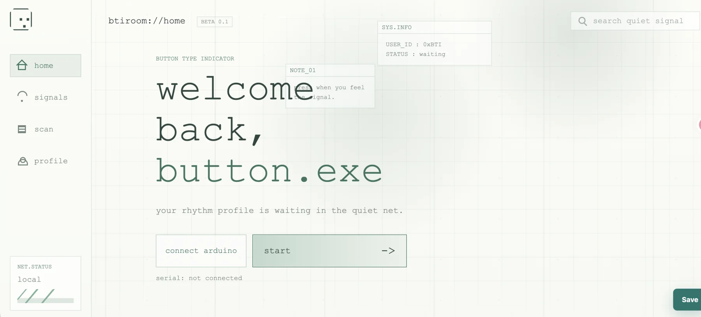
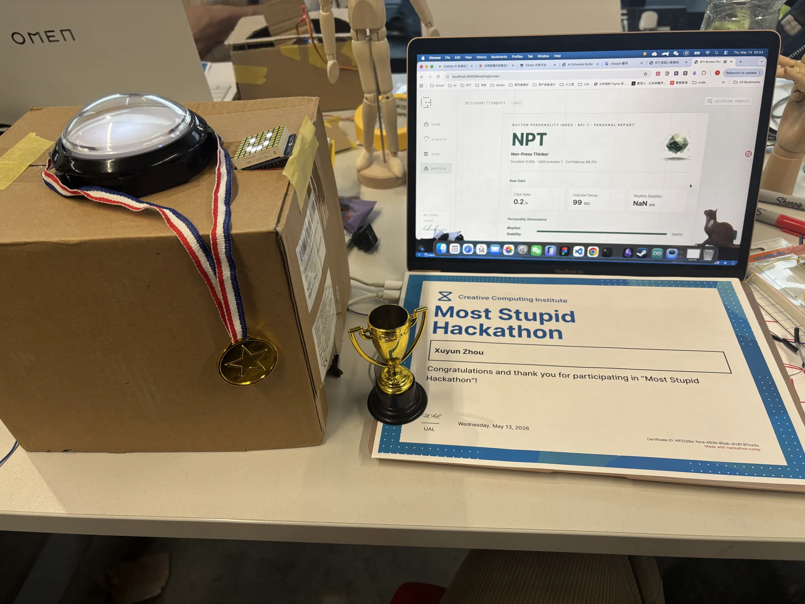

USELESS BUTTON · PHYSICAL COMPUTING
Useless Button
一个从“无用按钮”出发的实体交互实验：装置记录按压节奏，网页把这些行为信号整理成一份 Button Personality Index 报告。
实体与界面
实体按钮与网页端共同组成完整体验：从按压行为采集，到节奏数据与个性报告的呈现。



USELESS BUTTON · PHYSICAL COMPUTING
一个从“无用按钮”出发的实体交互实验：装置记录按压节奏，网页把这些行为信号整理成一份 Button Personality Index 报告。
实体按钮与网页端共同组成完整体验：从按压行为采集，到节奏数据与个性报告的呈现。

